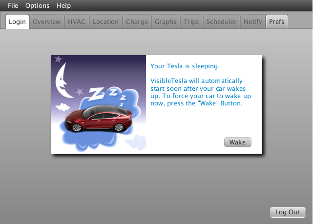

Understanding Sleep Mode
Your Tesla has a sleep mode that allows it to conserve battery power when it's not in use. For example, if your car is just sitting in your garage overnight, it can power down certain internal systems to reduce the drain on the battery. If your car is sleeping and you connect to it using Tesla's official iPhone or Android application, it will wake up your car and keep it awake as long as you're using the app. VisibleTesla tries to be a little smarter and a little more flexible in the way it interacts with your car.
It all starts when you launch VisibleTesla. Before doing anything else, the app determines if your car is asleep. If it is, you'll be asked whether you want to wake it up or let it continue sleeping (see the screen shot below). If you click the Wake it up button, VisibleTesla will launch as usual and wake up your car in the process.

If you click Let it sleep, VisibleTesla will continue running, but it won't start collecting data, and hence won't wake up the car. Instead it will display a panel (see screen shot below) saying that the car is asleep and that the app will start automatically when it notices that the car wakes up. There is also a Wake button that you can press at any time to force the car to wake up.
Please note that while in this mode, VisibleTesla will not collect any information from your car, it will not send notifications, and it will not run scheduled tasks. It will simply check your car's status every 5 minutes until it wakes up. If you want VisibleTesla to be fully functional, you need to wake up your car.
Let's take an example. Say that you launch VisibleTesla at 08:32AM and your car is asleep. You tell the app to let your car stay asleep. at 09:00AM you get in the car, turn it on and drive away. VisibleTesla would have been checking your car every five minutes since 08:32AM meaning 08:37, 08:42, 08:47, 08:52, and 08:57. It will check again at 09:02 and find that your car is awake. At that point the app will finish launching and start collecting data. Notice that it will have missed the first 2 minutes of your trip.

When you are using VisibleTesla, it communicates with your car on a regular basis. This communication allows VisibleTesla to do things like display up-to-date information, record statistics, and notify you about events. The downside is that all of this communication will keep your car from going to sleep. It also puts a continuous load on Tesla's servers. VisibileTesla let's you control whether you want it talking to your car on a regular basis. The app can either be in Stay Awake mode or Allow Sleeping mode. The former continuously collects data from your car, while the latter will stop collecting data and allow your car to go to sleep.
VisibleTesla can enter and exit these modes in a couple of different ways. First, there is the Options→Inactivity menu as shown in the screen shot below.

The menu options have the following effects:
- Stay Awake: The application will communicate with your car on a regular basis. If your car happens to be sleeping, it will be awoken.
- Allow Sleeping: The app will begin to monitor user activity. If no activity has occurred for 15 minutes, the app will go into Sleep mode. In this mode VisibleTesla will not collect data from your car. This will allow your car to go to sleep if it chooses to. VisibleTesla will opportunistically collect data from your car, but it won't do anything that will keep your car from sleeping.
If 15 minutes of inactivity have passed and the app is in Allow Sleeping mode, the app will go to sleep and an indication will be displayed in the window title bar. If you start interacting with VisibleTesla (e.g. press a button), it will wake up and start communicating with your car again. Of course if another 15 minutes of inactivity passes, it will go back to sleep. You can change the 15 minute inactivity threshold to another value in the Prefs Tab under General→Basic. Your menu selection is remembered across runs of the application. If a scheduled command is executed (see the Scheduler Tab), then it is just as if the user had interacted with the app. The only exception is if the scheduled command was for the app to enter sleep mode. So, if you schedule the HVAC system to turn on at 06:55AM, it will wake up the app just as if you had pressed the On button manually on the HVAC Tab.
In addition to the Inactivity menu, you can also use the Scheduler Tab to enter these modes. For example, you might set up the following schedule:
-
Time Action 07:00 Put VisibleTesla into Stay Awake mode to ensure it's ready to capture your drive to work 09:00 Put VisibleTesla into Allow Sleeping mode since you want to let the car rest while you're working hard. 17:30 Put VisibleTesla into Stay Awake mode to capture your drive home. 19:30 Put VisibleTesla into Allow Sleeping mode for the night.
- When the app goes into this mode it does not (and can not) put the car to sleep. It simply stops doing anything that would otherwise keep it from sleeping.
- Even while the app is sleeping, it checks the car periodically to see if it is awake. This check will not wake up a sleeping car. If it is awake, VisibleTesla will collect some data but then remember not to bother the car again for 30 minutes. That's enough time for it to go to sleep if it wants. If, after collecting this data, the app notices that not only is the car awake, but it is moving or charging, it won't wait another 30 minutes to check back in. It will continue to speak to the car regularly until motion or charging stop.
- Scheduler commands can wake up the car even if the app is in Sleep mode. For example, if you schedule the heater to turn on at 07:45, it will make sure that the car is awake before sending the command to turn on the heater.